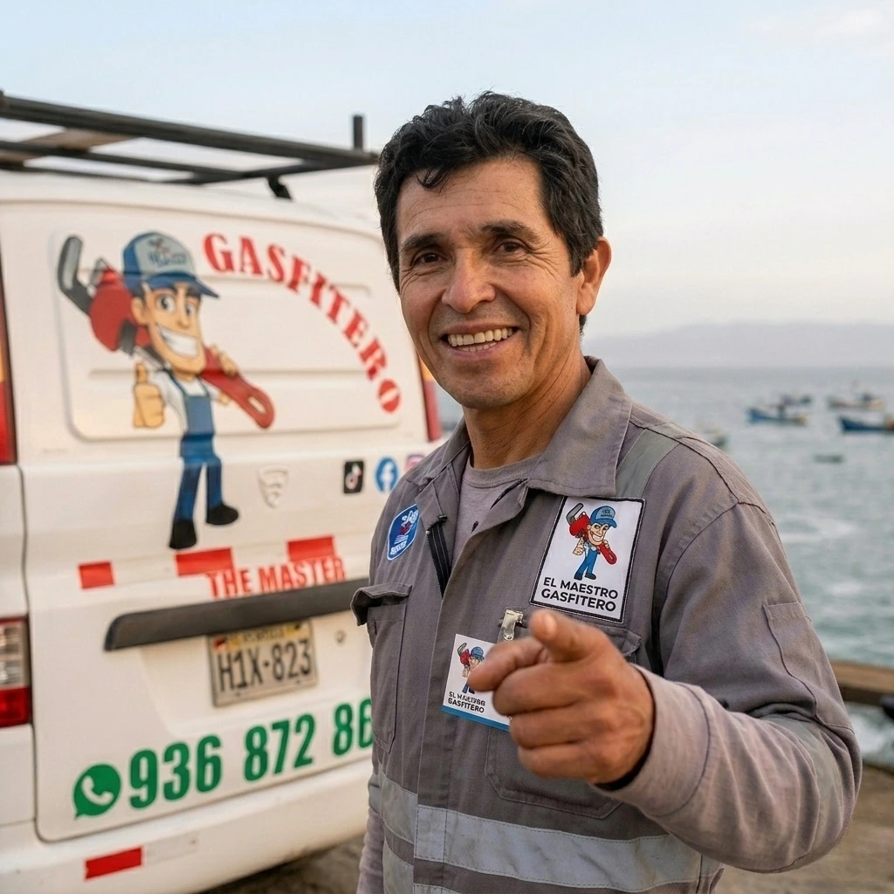
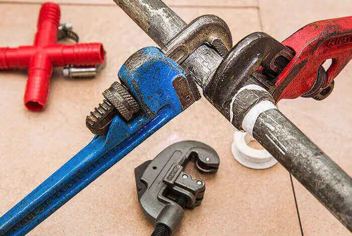
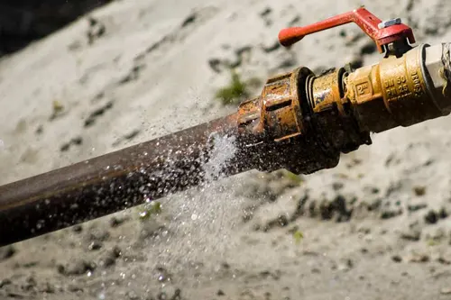

De confianza desde 2009
"The Master"
Gasfitería
Servicios rápidos y confiables de gasfitería para hogares y negocios en Nuevo Chimbote y la región.
Sobre el negocio
Oficio local,
resultados reales
The Master Gasfitería es un negocio familiar dirigido por Fernando - un gasfitero con más de quince años trabajando en hogares, restaurantes, clínicas, fábricas y oficinas en toda la región de Chimbote. Cada trabajo se realiza con cuidado, comunicación clara y enfoque en resultados duraderos.
Hemos trabajado en oficinas financieras, negocios automotrices, plantas industriales e incluso en instalaciones de baños en embarcaciones. Ningún proyecto es demasiado específico, y ningún cliente queda sin una explicación clara de lo encontrado y lo realizado.
"Soluciones profesionales para sistemas de agua, fugas e instalaciones sanitarias."

Qué hacemos
Servicios principales
Cuatro servicios que representan el núcleo del trabajo de Fernando para clientes locales en la región.
Nuestro proceso
Cómo abordamos cada trabajo
- Escuchamos el problema y revisamos la situación en el sitio.
- Explicamos la mejor opción claramente antes de iniciar el trabajo.
- Realizamos la reparación o instalación con atención al detalle.
- Verificamos el resultado y confirmamos que todo funciona correctamente.


Palabras de clientes
Qué dicen las personas
Reseñas breves que reflejan el tipo de servicio que Fernando busca dar a cada cliente.
Listos para ayudar
Contacta The Master
Gasfitería hoy
Fugas, limpieza de tanques, reparación de grifería, instalación de duchas - manejamos todo en la región de Chimbote.